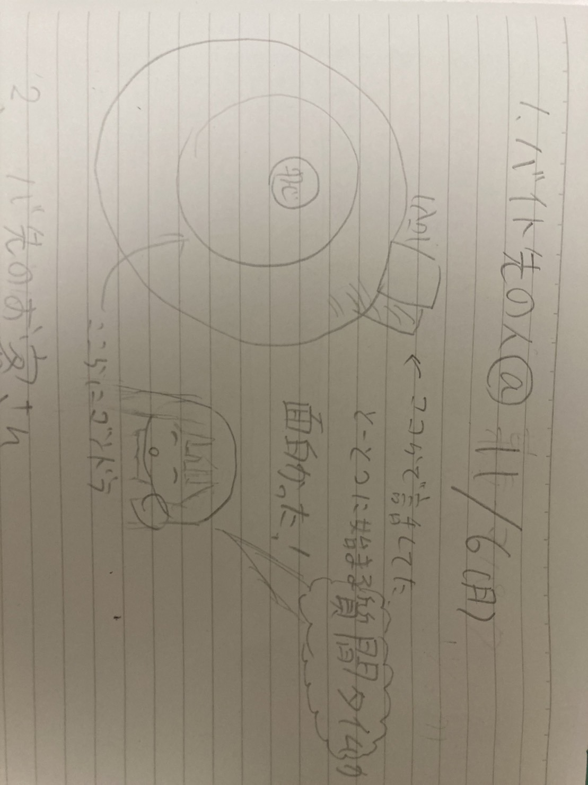
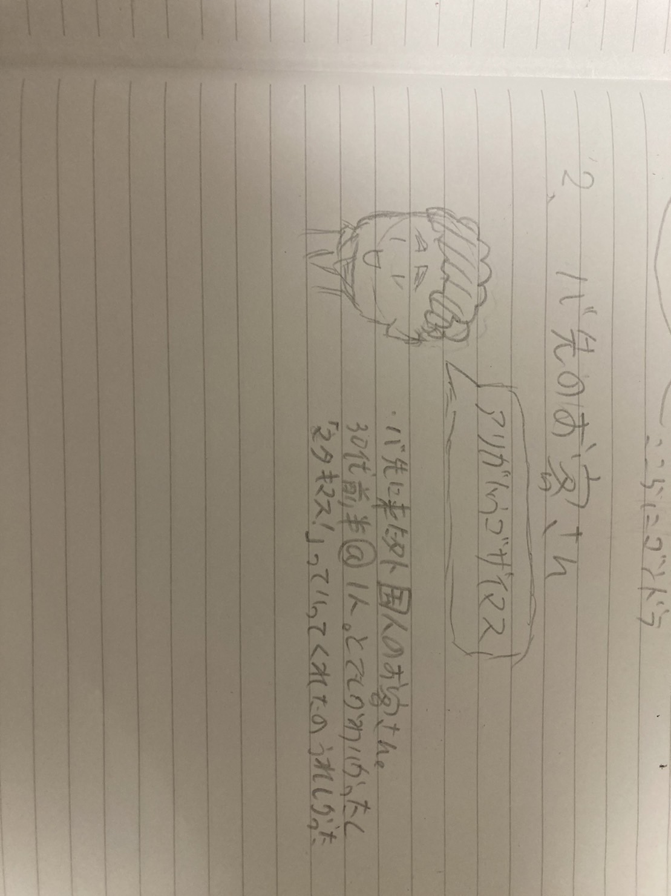

Design for others スケッチ
11/10 2023
デジタルファブリケーション
バイト先の子
バイト先にいる同い年の社員さん。ちょうどその日が平日であまりお客さんが来なかったので唐突に質問コーナーが始まった。 もうこの時点で面白いのにあだ名が"あつお"になった。 ちなみに私はあっちゃんとあだ名を付けられることが多いですがあっちゃん以外のあだ名を付けられたのは初めてだった。
バイト先にきたお客さん
同日夜の19時半にきたお客さん。30代前半の男性外国人のかただ。乗ってる間も楽しそうだったし反応がかわいかった。 ゴンドラから降ろしたときに「アリガトウゴザイマシタ！」って言ってくれたし「マタキマス！」って言ってくれたのが嬉しかった。
姉さん？
近所...というかお隣に住んでるお姉さん。よく面倒とかみてくれたから私は愛称をこめて「姉さん」と呼んでいるのでとても誤解されやすい。 この間は「もう大学生だからスキンケアとかメイクとか気にしろ」って言われました。ビールを片手に。笑